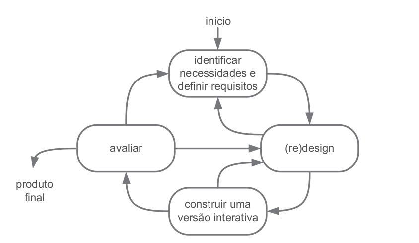
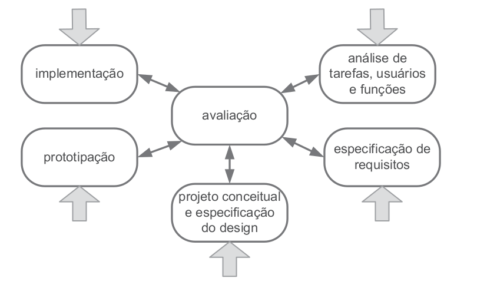

Processo de Design
Introdução
O projeto de design de Interação Humano Computador perpassa por três atividades básicas: análise, síntese e avaliação. A atividade de análise tem como principal objetivo estudar e interpretar uma situação, na qual serão planejadas e executadas intervenções, durante a etapa de síntese, cujo efeito será verificado por meio da avaliação. Uma intervenção consiste em uma solução para algum problema a ser resolvido, e pode ser avaliada durante todas as suas etapas, desde a concepção até após a aplicação.
A organização das atividades básicas citadas no parágrafo anterior pode ser feita de maneiras diferentes, e os processos de design em IHC propõem a execução dessas atividades de forma iterativa, para que seja possível refinar sucessivamente as intervenções propostas e a análise da situação atual.
A elaboração de uma Interação Humano Computador tem como principal objetivo atender e servir os usuários e os demais envolvidos (stakeholders), por este motivo, a maior parte dos processos de design são centrados no usuário, e seguem os princípios de foco no usuário, métricas observáveis e design interativo.
Para que o primeiro princípio, foco no usuário, seja atendido é necessário que o designer estude o perfil dos usuários do sistema. O segundo princípio parte de premissa de que o processo deve permitir a realização de experimentos que forneçam dados como, por exemplo, a performance e as reações dos usuários ao utilizar o sistema. Por fim, o último princípio permite que as etapas do processo de design possam se repetir à medida que as necessidades apareçam.
As atividades do processo de design podem ser organizadas de acordo com alguns ciclos de vida de projeto, alguns desses modelos estão detalhados a seguir.
Ciclo de vida simples
No ciclo de vida simples (Figura 1), a atividade de sínteses é dividida em design (ou redesign) e na construção de uma versão interativa. A iteração entre as atividades pode ocorrer quantas vezes forem necessárias. Esse modelo é mais indicado para designers que já possuam experiência, haja vista que ele apresenta atividades pouco detalhadas.

Figura 1: Ciclo de vida simples (Fonte: [1]).
Ciclo de vida em estrela
No ciclo de vida em estrela (Figura 2), o designer pode começar o processo por qualquer uma das pontas, desde que, após concluir cada atividade, este realize uma avaliação dos resultados obtidos. Neste modelo, a atividade de síntese é dividida nas atividades de projeto conceitual e especificação do design, prototipação e implementação.

Figura 2: Ciclo de vida em estrela (Fonte: [1]).
Ciclo de Vida de Nielsen
Nielsen definiu engenharia de usabilidade como as seguintes atividades como essenciais durante todo o ciclo de via de um produto:
- Conhecer o usuário;
- Realizar uma análise competitiva (examinar produtos com funcionalidades semelhantes);
- Definir as metas de usabilidade;
- Fazer designs paralelos (criar alternativas de design);
- Adotar o design participativo (acesso da equipe à usuários representativos do público alvo);
- Fazer o design coordenado da interface como um todo (design de todos os elementos da interface, como documentação, sistema de ajuda e etc);
- Aplicar diretrizes e análise heurística;
- Fazer protótipos;
- Realizar testes empíricos;
- Praticar design iterativo (correção de problemas durante as iterações de design e avaliação);
Ciclo de vida da Mayhew
Nesse ciclo de vida as atividades são divididas em três fases: análise de requisitos, design/avaliação/desenvolvimento e instalação, representados em detalhes na Figura 3. A primeira fase consiste na definição das metas de usabilidade, com base em dados coletados por meio de atividades como a análise do perfil do usuário e das tarefas. Durante a segunda fase o designer elabora uma solução de IHC atendendo as metas de usabilidade definidas na primeira fase. Por fim, na etapa de instalação, o projetista coleta opiniões dos usuários após o uso do sistema e utiliza tais opiniões na elaboração de melhorias.

Figura 3: Ciclo de vida da Mayhew (Fonte: [1]).
Ciclo de vida do projeto
Para a definição do ciclo de vida do projeto, foram levados em consideração dois aspectos principais: o ciclo de vida das atividades propostas na disciplina de Interação Humano Computador e o processo de aprendizagem dos estudantes do grupo. Considerando que o cronograma proposto no plano de ensino está em consonância com as atividades do ciclo de vida da Mayhew, e este apresenta um maior nível de detalhamento em relação aos outros ciclos de vidas propostos na literatura de referência, o ciclo de vida que será utilizado durante o projeto é o Ciclo de Vida da Mayhew.
Bibliografia
[1] Barbosa, S. D. J.; Silva, B. S. da; Silveira, M. S.; Gasparini, I.; Darin, T.; Barbosa, G. D. J. (2021) Interação Humano-Computador e Experiência do usuário. Autopublicação. ISBN: 978-65-00-19677-1.
Histórico de Versão
| Versão | Data | Descrição | Autor(es) | Revisor(es) |
|---|---|---|---|---|
1.0 |
18/11/2022 | Criação do documento. | Nicolas Souza | Davi Silva |
1.1 |
07/12/2022 | Melhorando justificativa da escolha do ciclo de vida. | Nicolas Souza | Lucas Macedo |